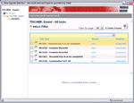
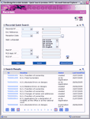
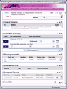
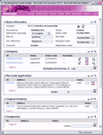

OHIM - RECordals
10/2004 - 06/2006, infeurope S.A. Luxembourg, OHIM Alicante
http://oami.europa.eu/
Requirements gathering for the RECordals module at the OHIM. Analysis and design of a software solutions, based on standard frameworks such as Spring and Tapestry, which will integrate with all of the existing modules at OHIM in order to register modifications to the Registered Community Designs.
I was part of the full development lifecycle of this REC-module for the Offices core business. Emphasis was put on using the RUP methodology, and especially gathering clear and complete functional requirements directly from the users and writing high quality use cases. Subsequently a detailed object oriented analysis and design (OOAD) using Rational Rose was performed.
Functionalities of RECordals
The RCD RECordals module aims to manage any modification of the information contained in the RCD Register, which is the database containing the particulars of all designs registered and published by the OHIM. Potential modifications (Recordals) that can be made to the RCD Register consist of:
- Transfers of RCD ownership
- Rectification of errors
- Licenses and Rights in Rem
- Surrenders
- Change to the name or address of the owner
- Change to the name or address of the representative
- Appointment, replacement and deletion of a representative
- Other publications
Technical Overview
The RCD Recordals module was developed in Java technologies and runs on a Web Logic 8.1 server, according to the architecture implemented at the OHIM. Given the constraints of a fixed price contract, RECordals was a quite challenging project:
- New module with new functionalities
- Integration with existing modules (EXA, CMD, AGD, ADM, PER, CPS, COR, PUB, TRA, CTM)
- Installation and configuration of all depending modules and databases on infeurope's premises test environment
- Requirements on-site (OHIM - Alicante) and development distributed between Luxembourg and Alicante with central source repository in Luxembourg
- Web based Project Management Information System (http://recordals.infeurope.lu/)
- Development using latest java technologies and frameworks such as Spring, JSF (myfaces), and Hibernate
Software used for the project
Task |
Software |
||
|---|---|---|---|
| Analysis | Rational Unified Process (RUP), UML | ||
| Database design | Power Designer | ||
| Teamwork | Common Subversion server in Luxembourg, access through SSH tunnel (Putty, TortoiseSVN), WEB PMIS, Wiki and developer forum. | ||
| Bug tracking and test results | JIRA, JUnit, JTestCase, Canoo WebTest, Clover | ||
| Programming languages / tools | Java JDK 1.4, J2EE, Spring 1.2.5, Hibernate 3, JSF, Maven and many libraries, Eclipse 3.1 | ||
| Application servers and database | WebLogic 8.1 SP4, Jetty 5, Informix 7.1.3 | ||
| Development platform | Sun Solaris 8 (server) and Windows XP (client) | ||
Screenshots
|  |  |  |  |
{kind=link}
{kind=link}
{kind=link}
{kind=link}